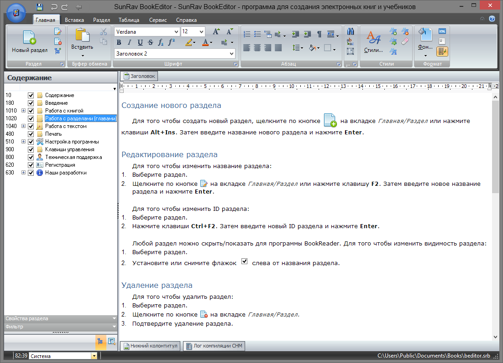

Главная
Практика
О себе
Теория
Практика
Задание: Создание электронного учебника при помощи программы SunRav Цель: освоить технологию создания электронного справочника. Ход работы: 1. Запустите программу SunRav BookEditor. Автоматически будет создан новый файл справки.

2. Создайте возможностями программы структуру оглавления по заданной тематике: а) Первый элемент оглавления создан автоматически. Отредактируйте его название, нажав на кнопку Переименовать на панели Разделы. б) Измените значок раздела, выбрав из списка значков. в) Добавьте новый раздел «Строение клетки», для чего воспользуйтесь кнопкой Добавить новый раздел на панели Разделы, если нужно создать раздел того же уровня, первого или кнопку Добавить новый подраздел, если это будет подраздел первого раздела. Измените его название и значок. г) Аналогично создайте остальные разделы оглавления 3. В область заголовка введите название справочника. Выделите текст заголовка, задайте произвольный размер и цвет шрифта, выравнивание по центру, используя кнопки редактора. 4. В область текста справки первого раздела вставьте из документа с материалами для справочника фрагмент текста (с рисунком и заголовком), отформатируйте по своему усмотрению. 5. Аналогично заполните содержание (заголовки, текст) следующих разделов, поочередно выбирая их в содержании. 6. Вставьте в разделы рисунки из файлов в папке с материалами. Для этого воспользуйтесь кнопкой Вставить рисунок панели Вставка, в диалоговом окне укажите путь к рисунку. 7. В первом разделе сделайте ссылку со слов общие сведения на раздел «Общие сведения»: а) Для добавления ссылки выделите текст «общие сведения» (он будет являться ссылкой), выполните щелчок по кнопке Добавить гиперссылку на панели Текст (или Вставка). б) В диалоговом окне Ссылка в поле Тип выберите Глава, поле Текст заполняется автоматически (выделенным текстом ссылки). в) Поле Цель раскройте, щелкнув по кнопке в кноце строки и выберите в структуре раздел «Общие сведения», нажмите кнопку Ок. 8. Аналогично создайте ссылки в двух последующих фраз в этом же разделе на соответствующие им разделы. 9. В разделе «Глоссарий» создайте гиперссылку на внешний файл глоссарий.doc а) Выделите в последнем предложении слово здесь и выполните щелчок по кнопке Добавить гиперссылку на панели Текст (или Вставка) б) В поле Тип выберите Интернет/Документ/Книга в) В поле Цель щелкните по кнопке в кноце строки и в диалоговом окне Открыть, выберите тип файлов Text files (*.doc, *.txt, *.rtf), выберите файл глоссарий.doc, находящийся в папке с материалами для справочника, нажмите кнопку Открыть. 10. Сохраните файл проекта книги в папку проекта (Файл – Сохранить как…) 11. Скомпилируйте файл справки при помощи кнопки Компилировать книгу в исполняемый файл на панели Файл и проверьте работу учебника (просмотреть все разделы, наличие рисунков, работу ссылок).
Посмотреть видео
БГПУ, Поклад Светлана Марьянова